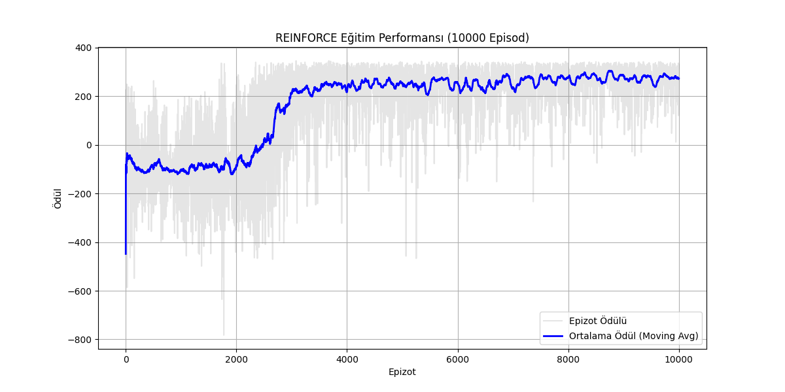
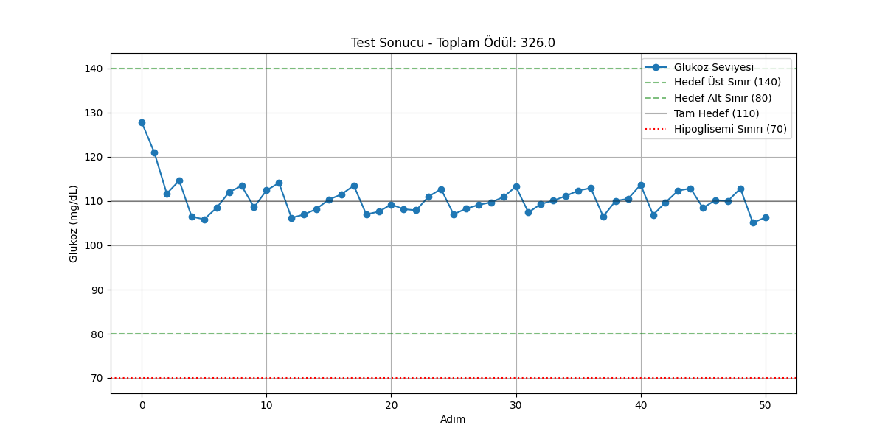

Sakarya Üniversitesi · ISE 427 Tıpta Yapay Zeka · 2025–2026 Güz
Pekiştirmeli öğrenme ile dinamik insülin dozu ayarı
Hiperglisemi hastalarında kan şekerini güvenli aralıkta tutmak için her adımda "dozu azalt / koru / artır" kararını veren bir REINFORCE ajanı. Gerçek hastalar üzerinde deneme yapılamayacağı için önce veriden bir simülasyon ortamı kurdum, ajanı bu ortamda eğittim.
Yaklaşım
Kaggle'daki Diabetes Prediction Dataset 100.000 hastanın tek bir andaki değerlerini içeriyor (yaş, cinsiyet, BMI, HbA1c, kan şekeri, hipertansiyon, kalp hastalığı, sigara). Zaman serisi olmadığı için önce glukozun bir eyleme nasıl tepki vereceğini tahmin eden bir model eğittim, ortamı bu modelin üstüne kurdum.
1 · Veri hazırlığı
Veri temizlenip ölçekleniyor; RL için ayrı bir veri ve ölçekleyici kaydediliyor.
2 · Glukoz dinamiği modeli
Mevcut glukoz ve uygulanan eylemden glukoz değişimini tahmin eden bir RandomForestRegressor.
3 · Simülasyon ortamı
Gymnasium tabanlı DiabetesEnv: 6 boyutlu durum (glukoz, HbA1c, yaş, BMI, hipertansiyon, kalp hastalığı), 3 ayrık eylem. Her adımda tahmine küçük bir gürültü eklenir.
4 · REINFORCE
PyTorch ile policy gradient: Adam, öğrenme oranı 0,001, gamma 0,99, 10.000 epizot.
Ödül fonksiyonu
Hedef glukoz 110 mg/dL, bir epizot en fazla 50 adım.
- Hedefe uzaklık 15'ten az (95–125 mg/dL): +5; 30'dan az (80–140 mg/dL): +1; daha uzaksa −0,05 × uzaklık
- "Koru" seçildiğinde 80–140 mg/dL aralığındaysa +2 (gereksiz doz değişikliğini azaltmak için), dışındaysa −1
- 70 mg/dL altı −10; 45 mg/dL altında ek −50 ve epizot biter
- 300 mg/dL üstü −5; 390 mg/dL üstünde ek −20 ve epizot biter
Sonuçlar


Bu sonuçlar yalnızca bu simülasyon için geçerli. Ortam kesitsel veriden türetildiği için gerçek bir hastanın glukoz dinamiğini temsil etmiyor; klinik bir öneri olarak okunmamalı. Bir sonraki adım olarak sürekli glukoz ölçüm (CGM) verisiyle zaman serisi tabanlı bir model denemek mantıklı olur.